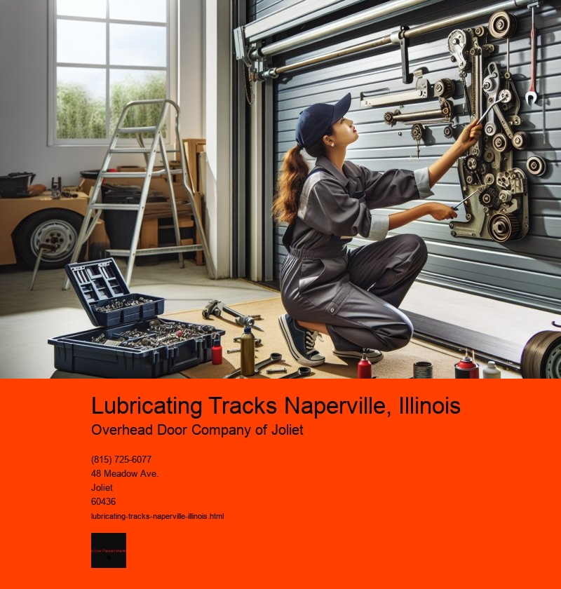

The Importance of Lubricating Tracks in Naperville, Illinois
Nestled in the heart of DuPage County, Naperville, Illinois is a city known for its vibrant community, scenic landscapes, and rich history. Among the many aspects that contribute to the seamless functioning of this bustling city, one often overlooked yet crucial element is the maintenance of its transportation infrastructure. An integral part of this maintenance is the lubrication of tracks, which plays a vital role in ensuring the smooth and efficient operation of trains that serve the area.
Lubricating tracks might not be the first thing that comes to mind when considering the complexities of urban infrastructure, but in places like Naperville, it is essential. The city is served by several train lines, including the Metra commuter rail, which connects Naperville to Chicago and other surrounding areas. The reliability of these services is crucial for thousands of daily commuters who depend on them for work and leisure. Thus, proper track maintenance, including lubrication, is a priority.
The primary purpose of lubricating tracks is to reduce friction between the train wheels and the rails. This reduction in friction not only enhances the trains efficiency by enabling smoother and faster movement but also significantly decreases wear and tear on both the train wheels and the tracks. This is particularly important in a city like Naperville, where the weather can be unpredictable, with harsh winters and hot summers that can exacerbate the wear on infrastructure.
Lubrication also contributes to noise reduction, an often underrated benefit that greatly enhances the quality of life for residents living near the tracks. The screeching noise of metal on metal can be a major nuisance, but with proper lubrication, this issue can be mitigated, allowing for a quieter and more peaceful environment for those in the vicinity.
Moreover, from an environmental perspective, maintaining well-lubricated tracks is a sustainable practice. By reducing the energy consumption of trains through decreased friction and noise, the overall carbon footprint of railway operations is lowered, aligning with broader goals of environmental stewardship and sustainability that are important to the Naperville community.
The process of lubricating tracks involves specialized equipment and techniques. Track lubricators are strategically placed along the tracks, especially in curves and areas with high wear potential. These devices automatically apply controlled amounts of lubricant to the rails, ensuring consistent coverage and effectiveness. Regular monitoring and maintenance of these systems are critical to ensure they function optimally, requiring skilled technicians and engineers to oversee the process.
In conclusion, the practice of lubricating tracks in Naperville, Illinois, is a vital component of the city's transportation infrastructure. It ensures efficient and reliable train services, minimizes noise pollution, reduces environmental impacts, and prolongs the lifespan of both the tracks and the trains. As Naperville continues to grow and develop, the importance of such maintenance practices becomes even more apparent, highlighting the need for ongoing investment and innovation in infrastructure care. Its a reminder that sometimes the most unassuming tasks play significant roles in the tapestry of urban life.
Frequency of Lubrication Naperville, Illinois
